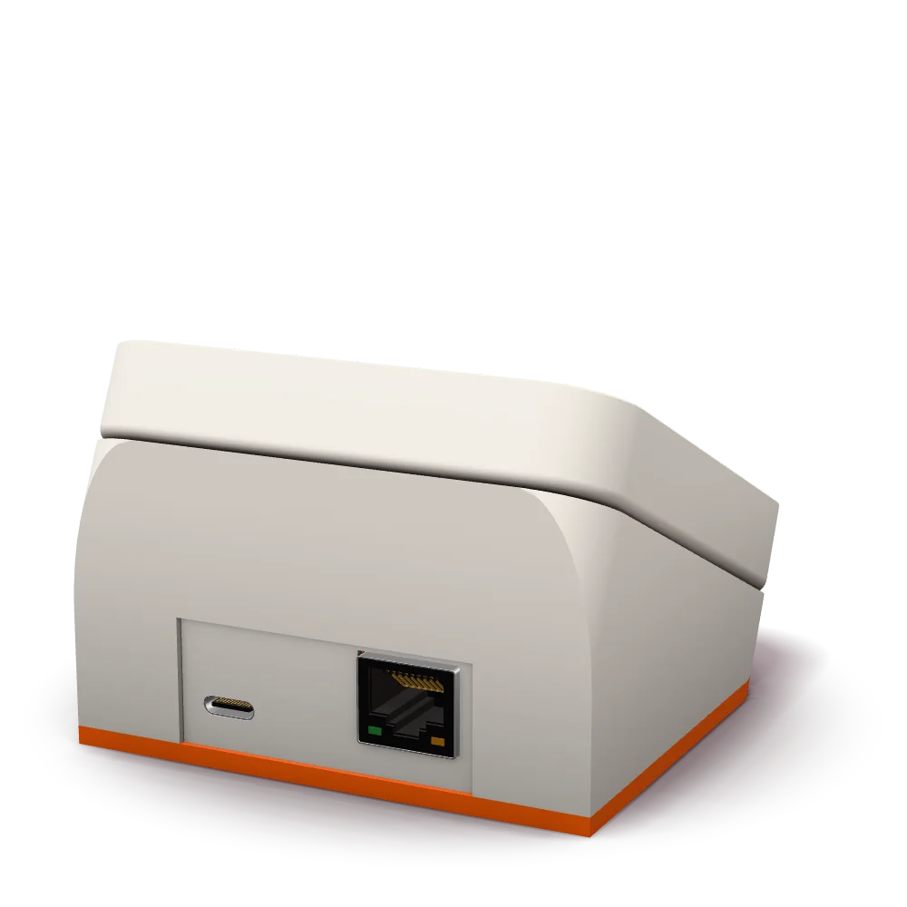
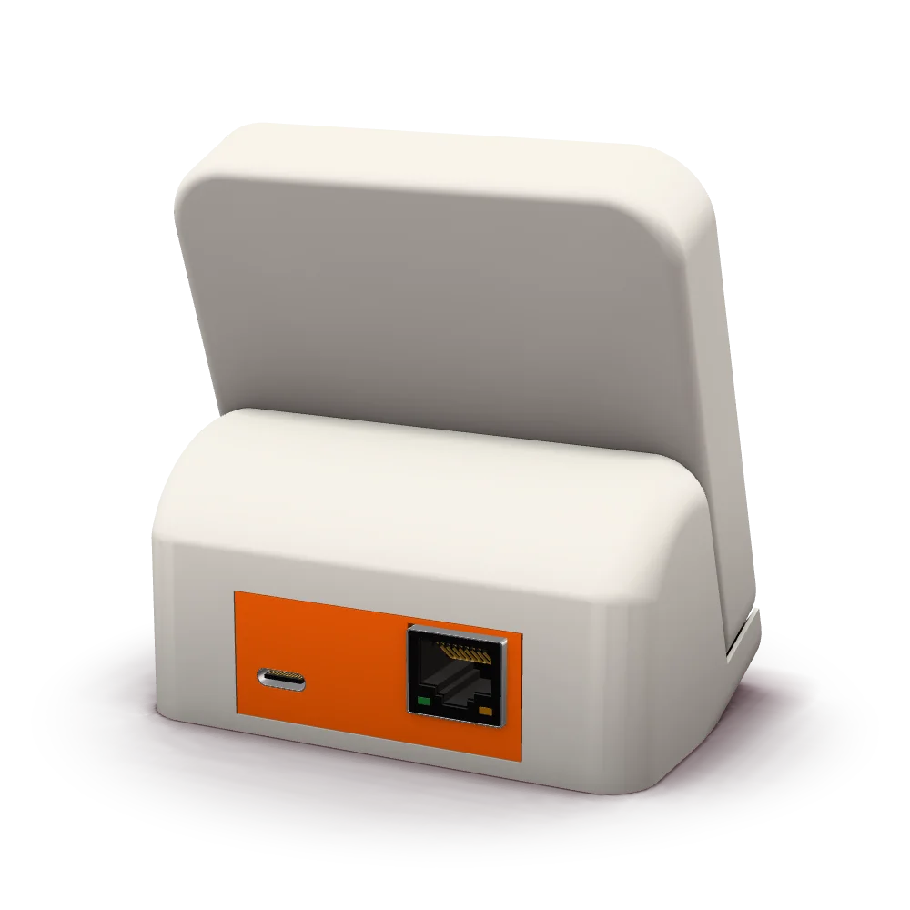

Three Docks, side by side
Dock designs in progress. None is final.
The Core is the same on all three. What changes is how it stands, and how much of the Dock you see. Drag one further down to turn it, or try its colours.
Design renders from the CAD, all three at one scale. Colours shown are proposals; yellow and blue stand on an all-grey Dock, and the pictures on this page show the first one, Retro. Screens are illustrative.
TILE

A low wedge in the Core’s own outline. It lies on the counter like a card terminal.
- Glass
- Tilts up 25 degrees from the counter.
- Hold
- Two magnets under the Core, out of sight, opposite the Core’s own two. Twenty spring pins take power and network across to it.
- Power
- USB-C in at the back, with Ethernet beside it, in an upright rear wall.
- Shape
- A wedge 13 mm high at the front, on a 3 mm base plate.
- Size
- 86.6 mm wide, 88.6 mm deep and 63.9 mm high with the Core on.
- Second colour
- The base plate, a line all the way round.
MONO

Core and foot as one block: a rounded square in front, one curve behind.
- Glass
- Leans back 20 degrees.
- Hold
- The Core sits in a pocket of the foot. Two magnets, out of sight, opposite the Core’s own two. Twenty spring pins take power and network across to it.
- Power
- USB-C in at the back, with Ethernet beside it, flush in the rear wall.
- Shape
- A chin 3 mm thick under the Core, side edges rounded 8 mm.
- Size
- 86.6 mm wide, 59.0 mm deep and 93.3 mm high with the Core on.
- Second colour
- The port plate at the back and the base plate underneath.